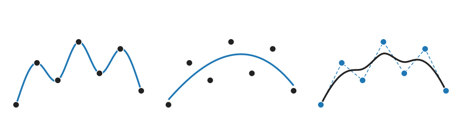
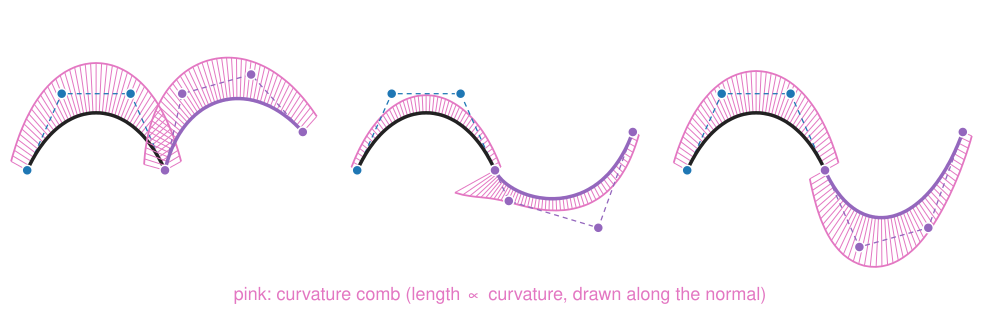
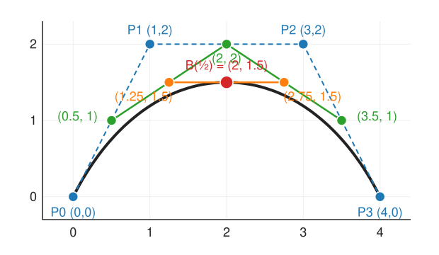

Polynomial wiggles, piecewise cubics and Bézier curves
Image analysis
About this lecture
We have points (clicks on a cell outline, samples of an intensity profile, boundary pixels) and want a smooth curve. This unit starts the splines day.
Why one polynomial through many points wiggles (Runge), and why a chain of low-degree pieces does not.
How smooth a join is: C⁰, C¹, G¹, C², seen in a curvature comb.
Parametric curves(x(t), y(t)) for outlines that fold back.
Bézier curves and de Casteljau: linear interpolation of linear interpolations.
What the control polygon tells you, and how to join pieces smoothly.
Slides titled The math give the formulas and proofs; the ideas are complete without them.
Three ways to draw a curve through points

Through the points: clean data, few points (an interpolating curve).
Near the points: noisy data; the curve should not follow the noise (unit 3).
Controlled by the points: the points are handles that steer a shape, as in a drawing program (this unit and the next).
The rest of the day returns to these three.
One polynomial through all the points
n points with different x fix exactly one polynomial of degree n - 1. For 3 to 5 points that is fine. For many points it is not.
By hand: five samples of a bump, (-2, 0), (-1, 0), (0, 1), (1, 0), (2, 0). The degree-4 polynomial through them is
p(x) = \tfrac14 (x^2 - 1)(x^2 - 4).
Check: p(0) = 1, p(\pm1) = p(\pm2) = 0.
Between the last two samples: p(1.5) = \tfrac14 \cdot 1.25 \cdot (-1.75) = -0.55, although every sample nearby is 0.
With 11 equally spaced samples of the bump 1/(1 + 25x^2) the swings near the ends reach 1.9; with 21 samples, 60 (Runge’s phenomenon, 1901). More points make it worse.
The math: the interpolation polynomial
Lagrange form. With nodes x_0, \dots, x_{n-1}, p(x) = \sum_i y_i L_i(x), \qquad L_i(x) = \prod_{j \ne i}\frac{x - x_j}{x_i - x_j} \quad (L_i(x_k) = 1 \text{ if } k = i, \text{ else } 0). Equivalently, solve the Vandermonde system \sum_k a_k x_i^k = y_i.
Error. For a smooth f, at every x there is a \xi in the node range with f(x) - p(x) = \frac{f^{(n)}(\xi)}{n!}\,\prod_{i}(x - x_i).
For equispaced nodes the node product is largest near the ends (five nodes -2, \dots, 2: 1.4 at x = 0.5, 3.3 at x = 1.5), and for the bump the derivatives f^{(n)} grow faster than n!: the error explodes at the ends.
Chebyshev nodesx_i = -\cos\frac{(2i + 1)\pi}{2n} (bunched at the ends) minimise the largest node product. They fix Runge, but we rarely choose where our samples lie.
Try it: Runge’s phenomenon
Recall: piecewise linear is 1D bilinear
Joining neighbouring samples with straight lines is the 1D version of bilinear interpolation from the images unit.
Continuous, local (moving one sample changes only its two neighbouring pieces), never overshoots.
But it has a kink at every sample: the slope jumps. Derivatives (edges, curvature, velocities) of the result are steps and spikes.
The fix that keeps locality and removes the kinks: piecewise low-degree polynomials that agree in slope (and curvature) where they meet. A cubic has 4 numbers per piece: enough to match value and slope at both ends (cubic Hermite pieces).
How smooth is a join?

C⁰: the pieces meet (no gap), but may form a kink.
G¹: same tangent direction, possibly different speed; looks smooth.
C¹: same tangent vector (direction and speed).
C²: also the same second derivative; for curves drawn at constant speed, the same curvature.
Curvature = 1 / radius of the touching circle. The curvature comb draws it as a bristle along the normal at every point: a jump in the comb is what the eye sees as a “bump” at a join that is only G¹ or C¹.
The math: curvature of a parametric curve
For a curve \mathbf{C}(t) = (x(t), y(t)): \kappa = \frac{x'y'' - y'x''}{(x'^2 + y'^2)^{3/2}}.
Positive: turning left (counter-clockwise, y up); negative: turning right. |\kappa| = 1/r of the osculating circle.
A circle of radius r, \mathbf{C}(t) = (r\cos t, r\sin t): x'y'' - y'x'' = r^2, speed r, so \kappa = r^2/r^3 = 1/r.
Curvature does not depend on the speed (reparametrising t changes x', x'' but not \kappa), while \mathbf{C}'' does: that is why G² (same curvature) is the geometric condition, C² the parametric one.
Parametric curves
A cell outline folds back on itself and closes: it is not the graph y = f(x) of any function.
Write the curve as \mathbf{C}(t) = (x(t), y(t)), a moving point; t is “time” along the curve.
Every construction of this day is applied to each coordinate separately: a curve through points \mathbf{P}_i is a function through the x_i and one through the y_i, with the same t.
The speed \|\mathbf{C}'(t)\| need not be constant; arc length is the integral of the speed (unit 3).
Bézier curves
A cubic Bézier curve has four control points\mathbf{P}_0, \dots, \mathbf{P}_3.
It starts at \mathbf{P}_0 and ends at \mathbf{P}_3.
It leaves along the leg \mathbf{P}_0\mathbf{P}_1 and arrives along \mathbf{P}_2\mathbf{P}_3.
The middle points pull the curve but are not passed through.
This is how vector drawing programs and fonts store outlines (one-line pointer): a chain of cubic Bézier pieces, each with two end points and two “handles”.
How to compute a point of the curve? Only with linear interpolation.
De Casteljau: interpolate, then interpolate again

At a fraction t, move t of the way along each leg; connect the new points and repeat until one point is left. \mathbf{P} = (0,0), (1,2), (3,2), (4,0), t = \tfrac12:
Linear interpolation of linear interpolations: the same trick as bilinear interpolation (lerp in x, then lerp in y).
The math: the Bernstein form
Unrolling de Casteljau gives a weighted sum of the control points: \mathbf{B}(t) = \sum_{i=0}^{n}\binom{n}{i}t^i(1 - t)^{n - i}\,\mathbf{P}_i = \sum_i b_{i,n}(t)\,\mathbf{P}_i.
Partition of unity: \sum_i b_{i,n}(t) = (t + (1 - t))^n = 1 (binomial theorem); and b_{i,n} \ge 0 on [0, 1]. So every curve point is a convex combination of the control points: the curve lies in their convex hull.
Cubic at t = \tfrac12: weights \tfrac18, \tfrac38, \tfrac38, \tfrac18, giving (2, 1.5) again.
Affine invariance: A\big(\sum_i b_i\mathbf{P}_i\big) + \mathbf{t} = \sum_i b_i(A\mathbf{P}_i + \mathbf{t}) because the weights sum to 1.
Try it: de Casteljau and the Bernstein weights
What the control polygon tells you
End points and end tangents: \mathbf{B}(0) = \mathbf{P}_0, \mathbf{B}'(0) = 3(\mathbf{P}_1 - \mathbf{P}_0); same at the other end.
Convex hull: the curve stays inside the polygon’s convex hull (useful for quick overlap tests).
Affine invariance: to rotate, scale or shear a curve, transform its 4 control points instead of 1000 curve points.
Subdivision: de Casteljau at t also splits the curve. The outer points of the construction are the control points of the two halves: (0,0), (0.5,1), (1.25,1.5), (2,1.5) and (2,1.5), (2.75,1.5), (3.5,1), (4,0).
Shape from the legs: inner legs crossing far out give a loop; crossed so the speed passes through zero give a cusp.
Joining Bézier pieces
A second piece \mathbf{Q}_0, \dots, \mathbf{Q}_3 after \mathbf{P}_0, \dots, \mathbf{P}_3:
Join
Rule
C⁰
\mathbf{Q}_0 = \mathbf{P}_3
G¹
also: \mathbf{Q}_1 on the ray from \mathbf{P}_3 in the direction \mathbf{P}_3 - \mathbf{P}_2
C¹
also: \mathbf{Q}_1 = 2\mathbf{P}_3 - \mathbf{P}_2 (the mirror image of \mathbf{P}_2)
With \mathbf{P}_2 = (3, 2), \mathbf{P}_3 = (4, 0): C¹ needs \mathbf{Q}_1 = (5, -2); G¹ allows any (4, 0) + s(1, -2), s > 0.
Even C¹ is not C²: the curvature can still jump (the comb shows it). In a drawing program the user keeps these rules by hand, handle by handle.
The math: derivatives and the C¹ condition
Differentiating the Bernstein form gives a Bézier curve of degree n - 1 whose control points are the scaled legs: \mathbf{B}'(t) = n\sum_{i=0}^{n-1} b_{i,n-1}(t)\,(\mathbf{P}_{i+1} - \mathbf{P}_i), \qquad \mathbf{B}'(0) = n(\mathbf{P}_1 - \mathbf{P}_0),\ \ \mathbf{B}'(1) = n(\mathbf{P}_n - \mathbf{P}_{n-1}).
C¹ between two cubics: 3(\mathbf{Q}_1 - \mathbf{Q}_0) = 3(\mathbf{P}_3 - \mathbf{P}_2) with \mathbf{Q}_0 = \mathbf{P}_3, so \mathbf{Q}_1 = 2\mathbf{P}_3 - \mathbf{P}_2.
Hermite ↔︎ Bézier: a cubic with end points \mathbf{P}_0, \mathbf{P}_3 and end tangents \mathbf{T}_0, \mathbf{T}_3 has \mathbf{P}_1 = \mathbf{P}_0 + \mathbf{T}_0/3, \mathbf{P}_2 = \mathbf{P}_3 - \mathbf{T}_3/3.
Try it: joins and the curvature comb
What Bézier pieces do not give us
Continuity by hand: every join must be kept C¹ (or G¹) by moving handles in pairs; C² is even harder.
Global control in one high-degree Bézier: every control point moves the whole curve (all Bernstein weights are non-zero for 0 < t < 1), and high degree brings back the wiggles.
What we want: a basis of bump functions in which each control point affects only a few pieces, and the smoothness of every join is built in. That is the B-spline basis (next unit).
Summary
One polynomial through many equispaced points wiggles near the ends (Runge); more points make it worse.
Use piecewise low-degree pieces; name the smoothness of a join: C⁰ (no gap), G¹ (same direction), C¹ (same tangent vector), C² (same curvature for constant speed). The curvature comb shows the difference.
Outlines are parametric curves; every construction acts per coordinate.
A Bézier curve is steered by its control polygon: it starts and ends at the end points, along the end legs, inside the convex hull. De Casteljau evaluates it with repeated linear interpolation, and splits it.
Joining pieces smoothly is a rule on the handles (\mathbf{Q}_1 = 2\mathbf{P}_3 - \mathbf{P}_2 for C¹), kept by hand.